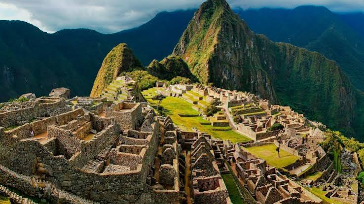

O Peru carrega uma riqueza histórica incomparável na América do Sul. A cidade de Cusco, antiga capital do Império Inca, é o ponto de partida para o Vale Sagrado e Machu Picchu. Para se hospedar com alto padrão e valor histórico, o Monasterio, A Belmond Hotel ocupa um antigo mosteiro do século XVI no centro histórico. Como opção acessível, o Pariwana Hostel oferece acomodações confortáveis em um charmoso casarão colonial próximo à Plaza de Armas.